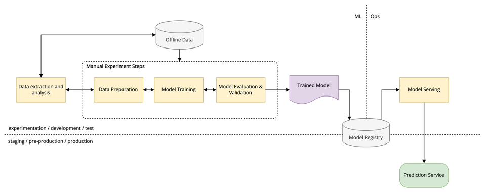

Managing the complete Machine Learning Lifecycle with MLflow
Machine Learning (ML) development brings many new complexities beyond the traditional software development lifecycle. Unlike in traditional software development, ML developers want to try multiple algorithms, tools and parameters to get the best results, and they need to track this information to reproduce work. In addition, developers need to use many distinct systems to productionize models.
To solve these challenges, MLflow, an open source project, simplifies the entire ML lifecycle. MLflow introduces simple abstractions to package reproducible projects*, track results, encapsulate models that can be used with many existing tools, and central repository to share models*, accelerating the ML lifecycle for organizations of any size.
*packaging projects and central model repository is not within the scope of this training
What you will learn
How each component of MLflow helps address challenges of the ML lifecycle.
- How to use MLflow Tracking to record and query experiments: code, data, config, and results.
- How to use MLflow Models general format to send models to diverse deployment tools.
- How to use MLflow Tracking UI to visually compare and contrast experimental runs with different tuning parameters and evaluate metrics.
There are four MLflow components, viz., MLflow Tracking, MLflow Models, MLflow Projects and MLflow Registry.
MLflow Models and MLflow Registry are out of scope for this training.
Traditional Software vs. Machine Learning
Developing machine learning applications is complex, and the complexity doesn’t necessarity strive from the fact that the theory behind the machine learning is difficult, or the math is difficult or the algorithm which are presented are difficult. Although there is some element of complexity, the machine learning frameworks makes it easier by abstracting away the details and exposing a simple class interface to initialise and train the model. In fact the default paramters gives pretty much a good baseline model to work with.
| Traditional Software | Machine Learning |
|---|---|
| Goal: Meet a functional specification | Goal: Optimize metric (e.g. accuracy) Constantly experiment to improve it. |
| Quality depends only on code | Quality depends on input data and tuning parmeters |
| Typically pick one software stack w/ fewer libraries and tools |
Compare + combine many libraries, models |
| Limited deployment environments | Diverse deployment environments |
Machine Learning Lifecycle
Following are four stages of a machine learning lifecycle, there can be other stages is between, but these are the paramount stages -
- Data Ingestion - Depending on the nature of data you might use one of the many data technologies for staging the data e.g., Hadoop, Kafka, S3, Delta lake, etc.
- Data Preparation - As per requirement and ease of use you might use a library in different language for preparing the data e.g., Spark, Pandas, Scikit-Learn, R, Java, etc.
- Training - Depending on the problem and type of data you might use different libraries or framework for training the model e.g., Scikit-Learn, TensorFlow, PyTorch, Xgboost, etc.
- Deployment - Based on the type of model and how you want to serve the results there are many deployment options like Docker, Kubernetes, TensorFlow serving, Flask, etc.

Challenges in managing Machine Learning lifecycle
- Each stage has it’s own requirements and tools
- Some stages (data preparation and training) rely on tuning parameters
- Each stage has it’s own scaling requirements
- Ensuring the same model that yielded optimal performance is deployed
- Governance and provenance - how the model evolved, who used it, when it was used so on and so forth.
Introducing MLflow
Open Machine Learning platform
- ML Library and language agnostic framework - supports all popular ML libraries
- Supports both local and cloud development environments
- Simple and modular to use - can be simply infused into existing ML code
- Easy to get started, hence positive developer experience!